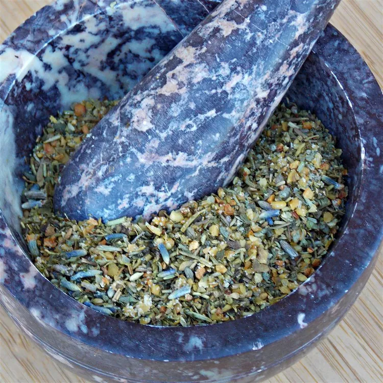

Herbs de Provence

Description
This herbs de Provence recipe was developed after looking at many different recipes.
It's my version of the classic dried herb seasoning that tastes great in everything.
And the fragrance is amazing!
Ingredients
- 2 tablespoons dried rosemary
- 1 tablespoon fennel seed
- 2 tablespoons dried savory
- 2 tablespoons dried thyme
- 2 tablespoons dried basil
- 2 tablespoons dried marjoram
- 2 tablespoons dried lavender flowers
- 2 tablespoons dried Italian parsley
- 1 tablespoon dried oregano
- 1 tablespoon dried tarragon
- 1 teaspoon bay powder
Steps
- Grind rosemary and fennel seed in a spice grinder; transfer to a mixing bowl.
- Add savory, thyme, basil, marjoram, lavender, parsley, oregano, tarragon, and bay powder to the bowl; stir well. Store in an airtight container between uses.